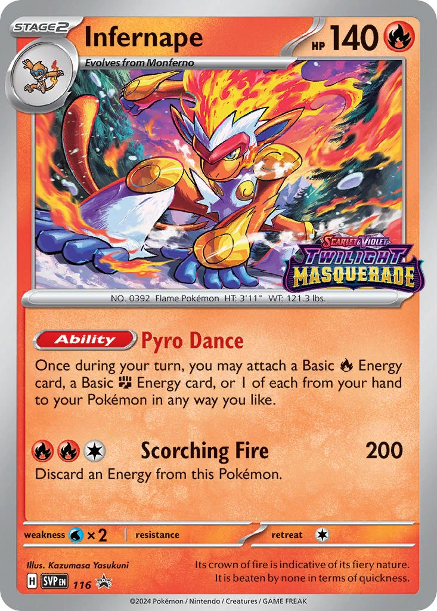
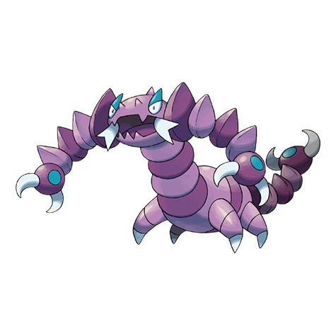
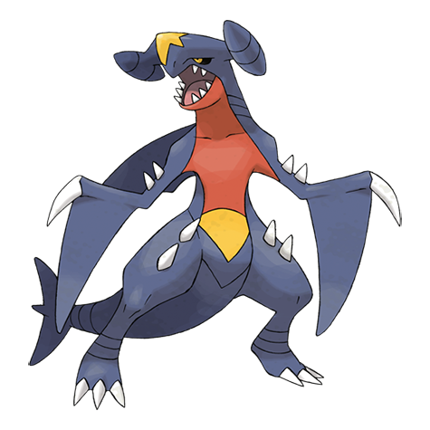
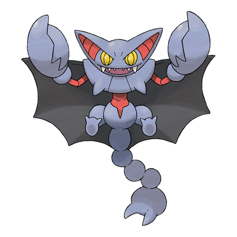

-
Torterra #001

- Grama
Há uma árvore em suas costas que fornece frutos. Serve para morada de pequenos Pókemons.
-
Infernape #002
- Fogo
- Lutador
É a evolução final do Chimchar. Durante uma batalha, ao atingir seu limite físico uma habilidade "Flamejante" é ativada, aumentando seu poder.
-
Magmortar #003

- Fogo
Possui braços em forma de canhão que expele chamas em alta temperatura.
-
Metagross #004

- Aço
Com quatro cérebros vinculados, é mais inteligente que um supercomputador e usa cálculos para analisar inimigos..
-
Floatzel #005

- Água
É uma visão comum nos portos de pesca. É conhecido por resgatar pessoas e levar presas.
-
Drapion #006
- Veneno
Seus braços repletos de garras têm o poder de transformar um carro em sucata. As pontas de suas garras soltam veneno
-
Empoleon #007

- Água
- Aço
é um grande Pokémon azul-marinho, parecido com um pinguim . Ele tem um bico largo e amarelo que se estende para cima em três chifres pontiagudos.
-
Garchomp #008
- Solo
- Dragão
É um Pokémon bípede, draconiano, que é principalmente de cor azul escuro. Ele tem vermelho em sua barriga, da mandíbula inferior até o meio do abdômen
-
Gliscor #009
- Solo/Voador
Gliscor são caçadores habilidosos, habilidosos em mirar nos pontos fracos dos inimigos para causar acertos críticos. Eles navegam pela escuridão.
-
Electivire #010

- Elétrico
é um tipo elétrico amarelo e forte que se assemelha a um yeti ou a um pé-grande e tem duas longas caudas pretas com pontas vermelhas que lembram lâmpadas de LED. Ele fica pendurado em torno de usinas de energia para se alimentar e obter mais energia.